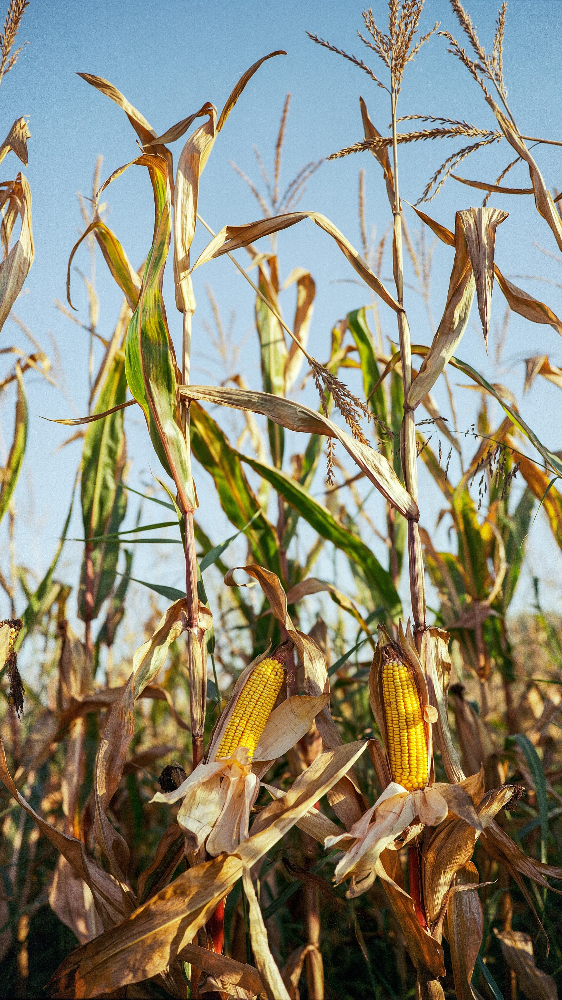
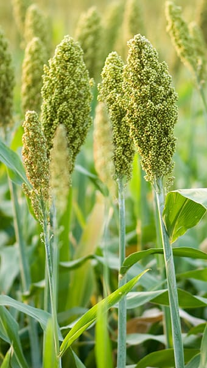
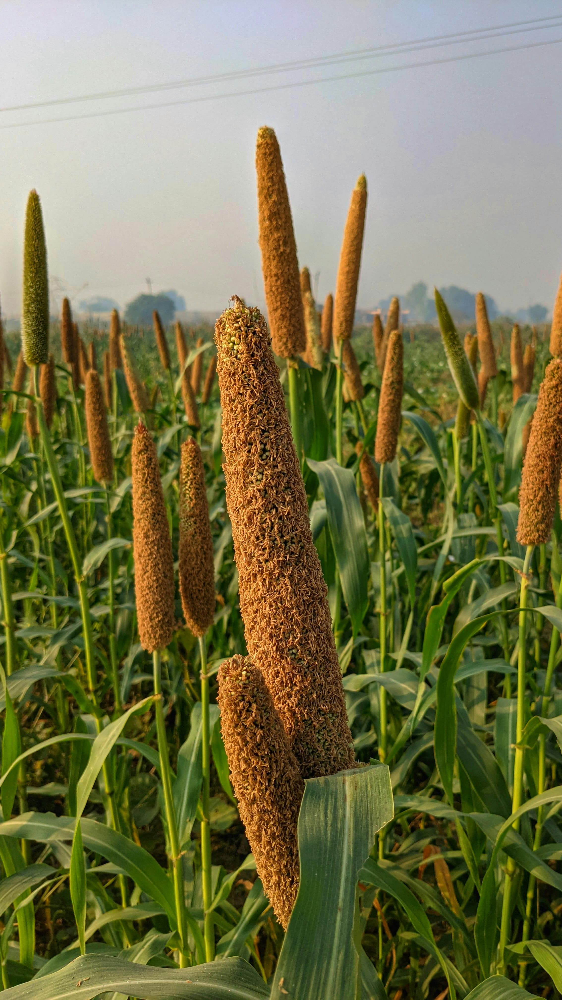
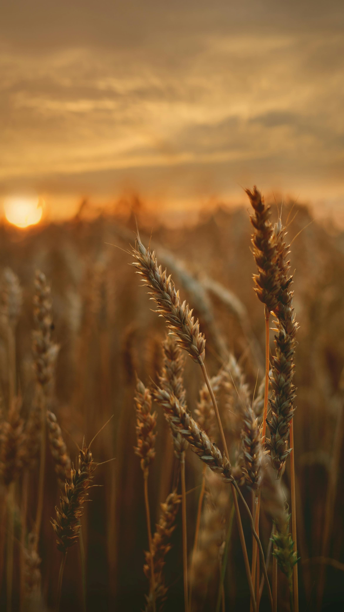
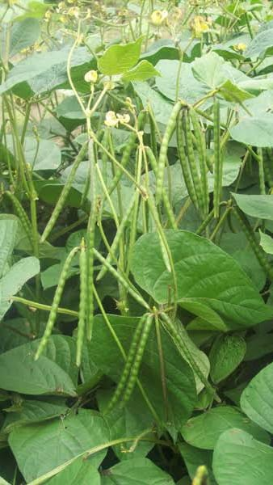
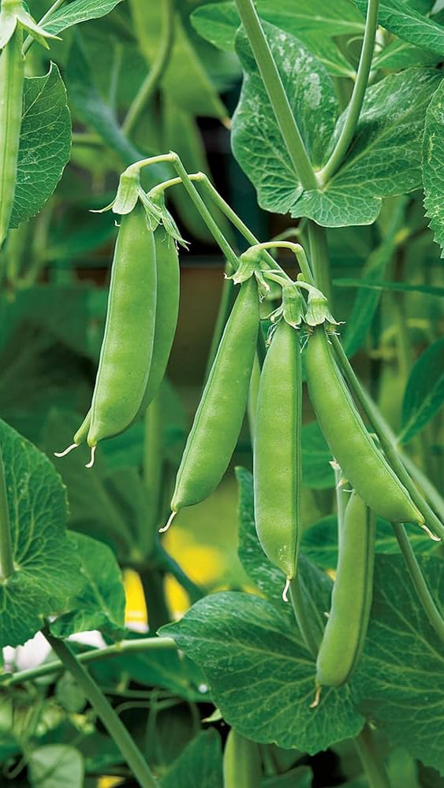

Sugarcane typically takes about 12-18 months to reach optimal harvesting time, depending on
the
variety and growing conditions.
It requires plenty of water, ideally around 1,500-2,500 mm of rainfall annually or
equivalent
irrigation.

Maize
Maize, or corn, can be harvested for profit within 60-100 days after planting, depending on
the
variety and environmental factors.
It requires consistent watering, needing about 1-1.5 inches of water per week, especially
during
critical growth stages like tasseling and silking.

Jowar
Jowar, or sorghum, is ready for profit harvesting in 70-120 days after planting. It's
drought-tolerant but needs regular watering, especially during crucial growth stages, though
exact water needs vary based on soil and climate.
Chickpeas
Harbhara, or chickpea, reaches profitability in about 90-110 days after planting. It
requires
moderate watering, with approximately 18-20 inches of water during its growing season.

Bajara
Bajra, or pearl millet, is ready for profit harvesting in about 60-90 days after
planting.
It's
relatively drought-tolerant but still requires occasional watering, with about 16-20
inches
of
water during its growth period.

Wheat
Wheat reaches profit harvesting in about 90-120 days after planting. It requires
moderate
watering, around 16-20 inches during its growth period.

Moong
Moong dal, or mung bean, reaches profit harvesting time within 60-90 days after planting. It
requires moderate watering, with about 16-20 inches of water during its growth period,
though
actual water needs may vary based on soil and climate conditions.

Peas
Peas typically reach profit harvesting time within 60-90 days after planting. They require
regular watering, with approximately 18-20 inches of water during their growth period,
although
specific water needs may vary depending on soil and climate conditions.